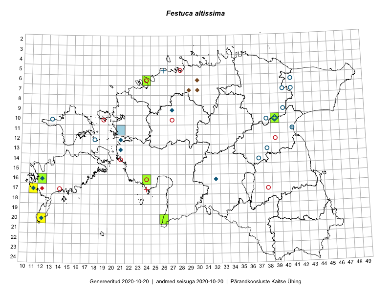

Festuca altissima
Uuendatud: 2016-12-02
Kaardile koondatud taksonid: Festuca altissima All.

Kaart põhineb 7 vaatlusel. Taksonit on leitud 3 ruudust.
Viited andmebaasikirjetele
- Toomas Kukk, Raivo Kalle: 2015-05-12: 10-39: ala
- Toomas Kukk, Raivo Kalle: 2015-05-12: 10-39: GPS punkt
- Mari Reitalu, Triin Reitalu: 2015-04-30: 16-12: ala
- Triin Reitalu, Mari Reitalu: 2015-04-30: 16-12: GPS punkt
- Thea Kull, Peedu Saar: 2016-06-06: 20-26: GPS punkt
- Ott Luuk, Eerik Leibak: 2016-08-03: 10-39: ala
- Ott Luuk, Eerik Leibak: 2016-08-03: 10-39: GPS punkt